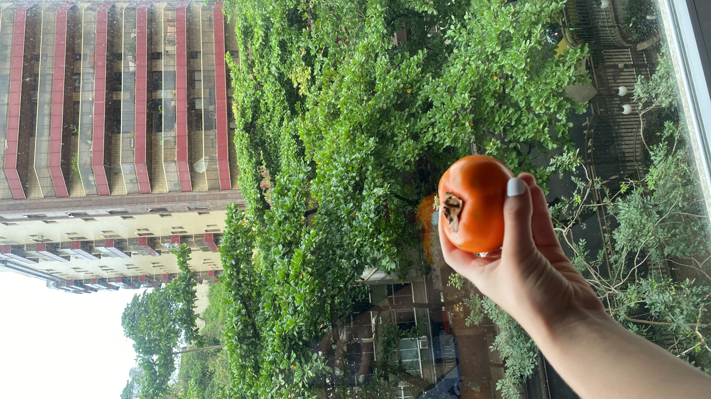
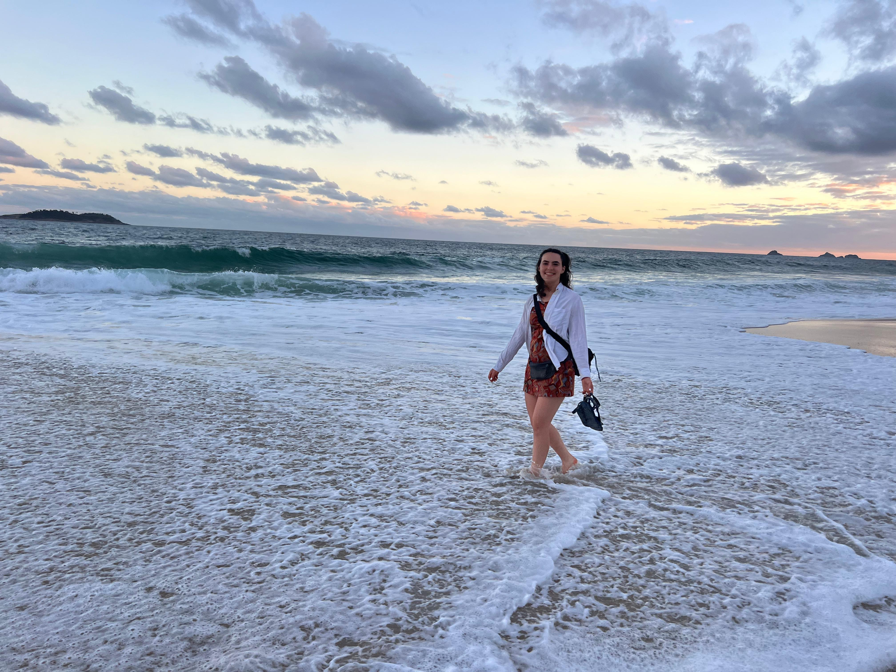
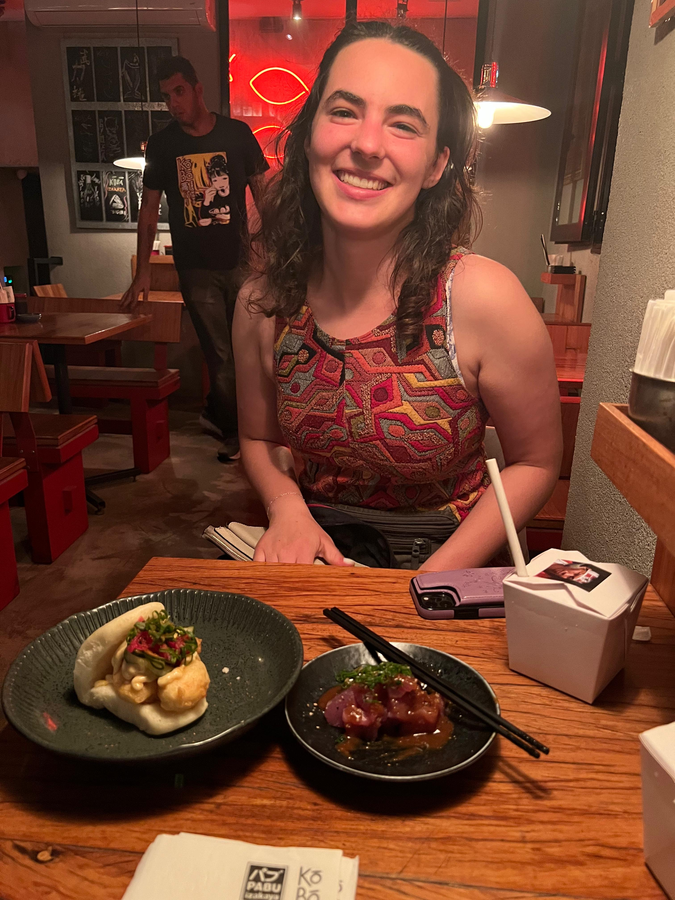

After many delays involving >8 hours in the airport on both their parts, Lena and Emily finally made it to Rio. Lena's plane ran out of fuel before reaching Miami so she got stranded in Fort Myers overnight. Luckily, she got a hotel voucher and $12 off a meal at any single restaurant in the airport. All the food in the airport was closed for the night so she got 2 bottles of water that were somehow $11. Emily was waylaid by under-staffing in Houston and had to delay her entire itinerary by 24 hours. Luckily, they both ended up touching down around the same time and were able to find each other.
Our Airbnb host was a stern but kind lady who was not thrilled about the change of plans. We went rogue for an hour at a beach-side cafe waiting for her to let us in to our apartment. We didn't know enough Portuguese to realize they didn't serve food at this time. We also ran into some very nice security guards who really really wanted to help us get to our apartment. Alas, we did not know enough Portuguese to explain our situation. Almost no one has been speaking English to us. Either people here don't speak English or don't realize we speak English given our attempts in Portuguese (Lena) or Spanish (Emily). Every time Emily has attempted Spanish she has been understood perfectly but the same cannot be said for her understanding of the responses in Portuguese.
Our Airbnb is an airy apartment full of original artwork by the owner who on top of being stern is a bougie art lady. We got some tapioca snacks right across the street which Lena described as having the texture of a chicken cutlet. It's been a really long time since Lena has had chicken cutlets and let's just say... no not at all. We found them to be alright and we also tried queijo de minas which seems to be the Brazilian version of queso fresco.

Our Airbnb

Lena peeking through the keyhole
We were very productive despite being dead tired. We managed to hit the grocery store where we went WILD with the produce (and PB&J materials). It's unclear whether it's a good idea to eat fresh fruits and vegetables that we can't peel but it's not stopping Emily who went ham on some grapes. She hasn't suffered too much yet except for some unique farts last night :)

Emily's Brazilian friend, João, raves about Persimmons. The one time Emily had a Persimmon (in Texas) it was yucky but she decided to get another one in João's honor.
We also hit the beach where Emily attempted to bust open a passion fruit while watching the sun set with VERY impressive surfers in the foreground. We were also on a pretty rock. It was a big rock, too.
The passion fruit was quite tart and Lena was not a fan.
We struck out again with food when Emily suggested a vegan restaurant and Lena pointed one out that they could try. Why? Why did they do this? Must be the exhaustion. Trying to order something vegan from the menu in Portuguese was a journey. Emily was just trying her best to avoid vegan cheese (yuck!) Lena ended up with a burger and Emily got meatballs. The waiter was very enthusiastic to present the MEATBALLS or maybe just excited that he knew the word in English. They were decidedly edible.

Emily failing to avoid the vegan cheese.
After the meal, they decided to have some quiet time around 7 PM before continuing the evening's plans. Emily accidentally passed out and woke up again around 1 AM to actually brush her teeth and put PJs on.
This morning, Lena left early, heading to the university to conduct an interview with an Uber driver (she's here for a research project designing safer and more equitable navigation technology with communities in Rio). Emily, who had been partying with a chorus of mosquitoes last night, accidentally slept in until 11 AM.
The conventional wisdom is not to use your phone on the street lest someone snatch it out of your hands. This makes navigation slightly more fun and difficult-- we have to actually look at the map and remember the way. Lena, having been in Rio for 6 days in April, is already an expert at this. She's also researching the map, which helps. Emily is still getting her bearings, but managed to navigate to a few places all by herself. Regardless of where you are, we think it's a good idea to keep your phone in your pocket and know where you're going if you don't want to look like a noob.
Emily enjoyed her solo wandering-- it's always easiest to blend in with the locals when you're alone. She felt like a Brazilian-- an illusion that was instantly shattered when she had to talk to people. Damn, Portuguese is a whole different language from Spanish. Who knew?
Emily struggled a little to find a place to work but everyone was very nice to her. We have yet to order pao de queijo (one of our favorite Brazilian snacks) because Lena issued a solemn warning that if you mispronounce pao it sounds like dick with cheese rather than bread with cheese. Emily has been practicing all day but couldn't bring herself to order it at breakfast because it was on the kids' menu :(
After getting (nearly no) work done at a cafe, the dynamic duo was reunited to wander the beach and people watch.

You can feel the beach in Rio even if you're not on the beach. Many walk around barefoot with sand in their toes and everyone seems to have just come from the ocean.

People here are so attractive that we feel our attractiveness has increased by proxy. We'll let the pictures do the talking:

Then, we needed a break from our lackluster meals so Emily requested somewhere Lena had already been and they ended up at an AMAZING Japanese restaurant. They had one cocktail each which is why this blog post is so silly. They were STRONG though!!!!! The fresh fish was amazing and we love Japanese food. #No Ragrets

The fried shrimp bao were to die for.
We got some ice cream on the way back but we have no idea what flavors we got. This is definitely the most challenged Emily has ever felt with language. Everywhere else she's been has either been Spanish-speaking or a language she hasn't even attempted to speak. Portuguese hits that sweet spot for struggle...